CS 432 Project Journal
Module 1 - Introduction to Machine Learning
Framing the lending risk question, gathering three datasets, cleaning them, and taking a first look at what is inside.
Where the project started
I came into this project wanting to study something with real stakes rather than a tidy textbook dataset, and consumer lending risk kept rising to the top of the list. Part of that is personal. A lot of my day to day work already revolves around weighing signals and deciding how much risk is acceptable, so lending felt familiar and worth a closer look. The other part is that lending is one of those areas where the data and the consequences line up cleanly. A single decision about a loan turns into an approval or a denial, an interest rate, a monthly payment someone carries for years, and sometimes a complaint when things fall apart.
So instead of chasing a single accuracy number, I built the project around a question. What patterns in lending data actually point toward higher credit risk, and what do those patterns mean once you sit with them. Keeping the goal that open mattered, because the rest of the course works through clustering, dimensionality reduction, regression, and a whole stack of classifiers, and I wanted a topic with enough substance to carry all of them rather than one that fizzles out after the first method.
That choice also told me what kind of data to go find. I needed public, labeled, record style data, the sort of thing I could use two different ways. For the unsupervised work I could set the label aside and let the models discover borrower groupings on their own. For the supervised work I could bring the label back and actually predict it. Picking data with that double life in mind early on saved me from painting myself into a corner later in the term.
The three datasets
I ended up with three sources, and I picked them so each one would pull its weight on a different part of the story. The first is the German Credit dataset from Kaggle, a compact file of 954 borrower records with nine original variables and a credit risk label. It is small, but every column relates directly to a borrower, things like age, credit amount, loan duration, sex, housing, savings and checking account status, job, and the purpose of the loan. That makes it a clean fit for credit risk classification down the line.
The second is the Lending Club loan dataset, also from Kaggle, and it is the heavy one. The raw file holds 10,000 loans described by 54 variables before I trimmed anything. It carries borrower details, loan terms, credit utilization fields, loan grades and sub grades, and a loan_status outcome that spans six categories, running from Current and Fully Paid through several stages of late payment all the way to Charged Off. That depth is exactly what makes it useful for clustering, dimensionality reduction, regression, and outcome work later.
The third source is different in kind. I pulled mortgage complaint records from the Consumer Financial Protection Bureau through its public API, requesting complaints filed across 2025 in CSV form and sorting them by most recent. Where the first two datasets describe loans and borrowers, this one captures what people actually said when something went wrong, which adds a human layer that loan tables on their own simply cannot. The screenshots below show all three in their raw state, before any cleaning touched them.
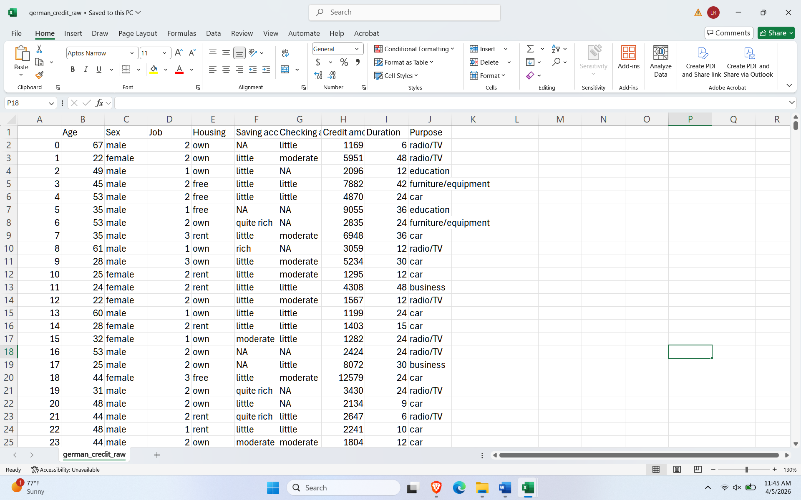
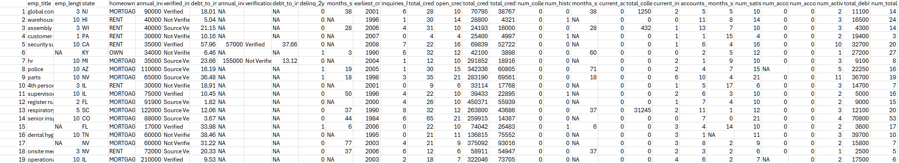
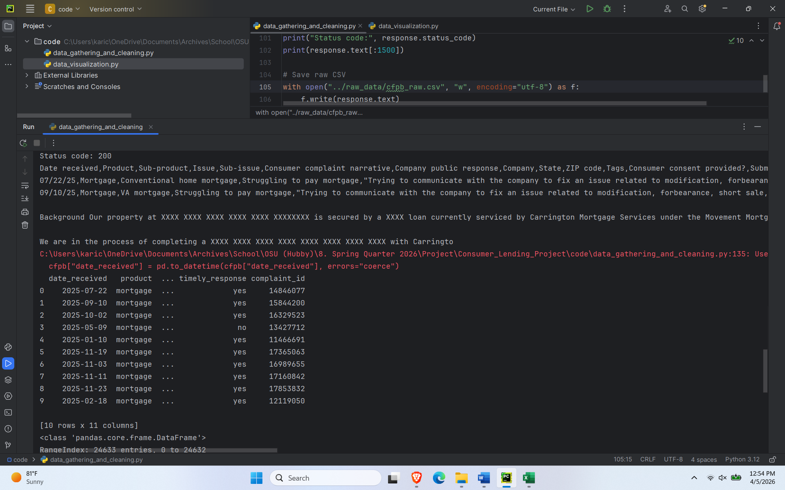
Getting the data into shape
None of the three files arrived ready to model, and the differences between them are exactly why cleaning is not just busywork. Every choice about what to keep, what to fill, and what to recode quietly decides what the later analysis is even able to see, so I tried to treat it as part of the thinking rather than a chore to rush through.
The German Credit file needed the least surgery. I dropped a leftover index column, standardized the names, and tidied the text fields. Where savings or checking account information was missing I filled it with an unknown category instead of deleting the row, since a thin account record can itself say something about a borrower. I treated job as a category rather than a number, and I built one new feature called credit amount per month by dividing the credit amount by the loan duration. That single derived column ended up mattering more than I expected, because it captures how heavy a loan feels month to month rather than just how large it is in total. After all of that the file held ten variables and the label, with no duplicates.
Lending Club took the most pruning. From the original 54 variables I kept a focused set of 27 plus loan_status and dropped the columns that were sparse or beside the point. Missing employer titles became unknown, and I filled gaps in employment length and debt to income with their medians so I would not bleed records for no good reason. The CFPB data needed a pass of its own. I narrowed it to mortgage complaints, kept eleven useful fields, standardized the text, filled missing categories with unknown, and converted the received date into a real datetime so I could track complaints over time. Once duplicates were removed it settled at 24,633 mortgage complaints. The cleaned versions of all three sit below.
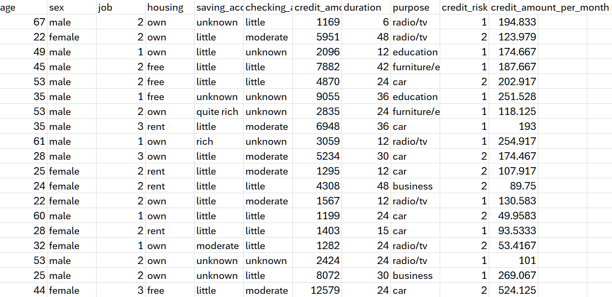
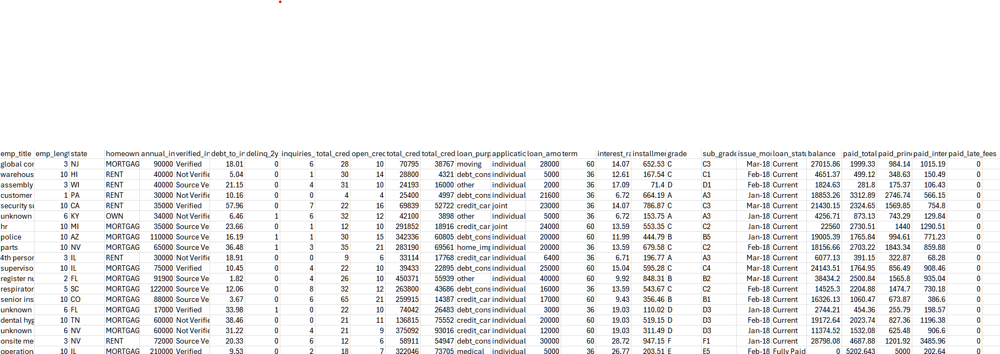
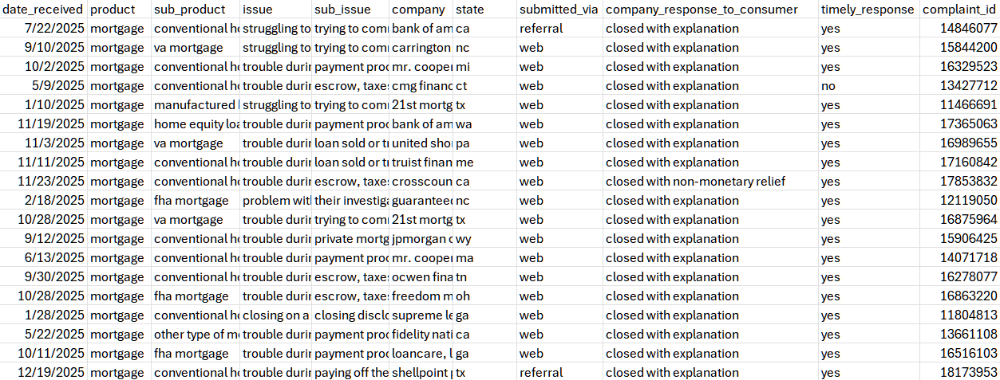
A first look at the numbers
Before running anything, I plotted each dataset to get a feel for its shape. This is the quiet step that ended up steering a lot of later decisions, especially around skew and lopsided labels.
The German Credit borrowers skew young. The age histogram bunches up in the mid twenties through the late thirties and then thins out as age climbs, so older borrowers are relatively uncommon here. Credit amounts sit in a low to moderate band for most people but trail off into a long tail of high value loans well above the upper whisker of the boxplot, and the per month burden I engineered shows the same lopsidedness, with most borrowers carrying a modest payment and a small group stretched much higher.
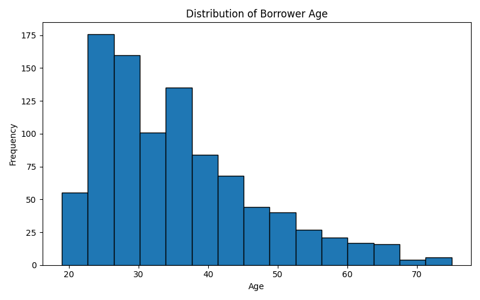
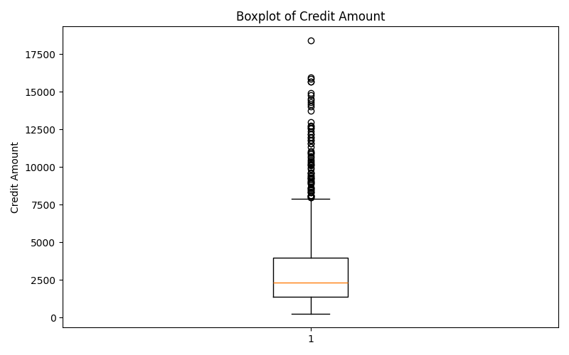
Lending Club is where the labels turn awkward. Current loans dominate the loan_status chart, Fully Paid sits a distant second, and the categories that actually signal trouble, the various stages of late payment and Charged Off, barely register. That imbalance is a genuine problem to plan around, because a lazy model could score well simply by guessing the majority class and never learning a thing about risk. I made a note of it here and it came back to bite, or at least to caution me, in every classification module that followed.
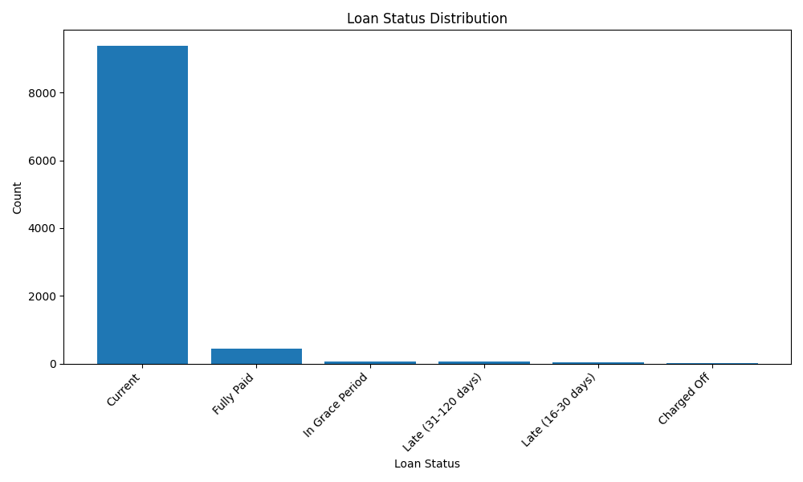
The complaint data rounded out the picture and kept it honest. Mortgage complaints across 2025 dip in February, climb through the year, and peak in December, and they pile up overwhelmingly on conventional home mortgages, with FHA and VA mortgages trailing well behind. When I looked at what people were actually complaining about, trouble during the payment process and simply struggling to pay the mortgage stood far above everything else, ahead of issues with applying, refinancing, or closing. Those are not abstract buckets. They are the moment lending risk stops being a number in a table and turns into someone's bad month.
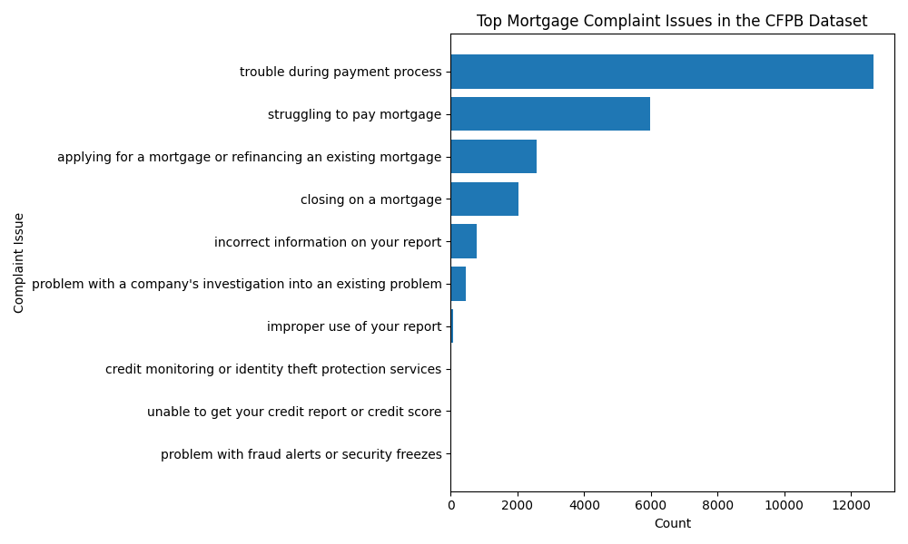
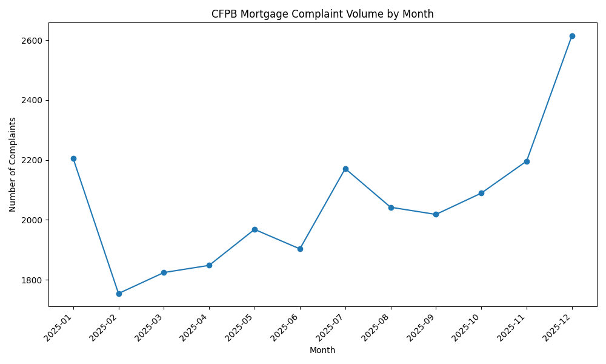
What this set up
By the end of the foundational work I had three cleaned datasets that each look at lending from a different angle, a clear sense of where the data was skewed or imbalanced, and a question worth chasing. More than that, I had a project where every later result could be read two ways at once, as a machine learning outcome and as something that means something about real borrowers and real lenders. Everything in the modules that follow is built on this base, and a surprising amount of what shows up later, the weight of account status, the importance of monthly burden, the overlap between borrower types, was already hinted at right here in the raw shapes of the data.